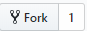
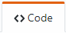
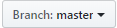
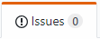
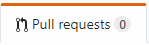
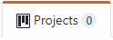
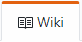
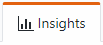

Diseño de Sitio WEB
GIT y GITHUB
¿Qué es GIT
Es un sistema de control de versiones distribuido, es decir, es una herramienta que permite inspeccionar los avances y modificaciones de un proyecto; este puede tener diferentes lenguajes, codigos y recursos que necesitan ser auditadas, permitiendo regresar a un estado anterior un archivo, ver los usuarios que han cambiado los documentos, entre otras funciones
¿Qué es GITHUB?
Es una plataforma que permite publicar los proyectos gestionados por el sistema de control de versiones GIT. Es una red social que permite a un grupo de personas (privados) o abiertos al mundo acceder a proyectos que gestiona GIT y todo su potencial
Partes de GITHUB
|  |
Permite realizar una copia del proyecto a un tercero que no tenga autorización para hacer modificaciones al proyecto original. |
|  |
Code se muestra la descripción del proyecto, tags para clasificar por temática y una vista de seguidores, stars, commits, branches, releases, enviroment y contributors |
|  |
Es una bifurcación de github, es decir, versiones de una rama principal. Se crean diferentes bifurcaciones cuando se requiere avanzar en funcionalidades diferentes o cuando se requiere restaurar una versión anterior
|
|  |
Es un gestor de errores, permitiendo debatir para solucionarlo. |
|  |
Esta funcionalidad va atada al fork y su intención es solicitar al propietario del repositorio original para que incorpore los commits que están en el fork.
|
|  |
Permite organizar las tareas, issues que esten relacionadas entre sí manteniendo un estilo Kanban |
|  |
Es un repositorio para almacenar la documentación del proyecto |
|  |
Es una página que permite visualizar métricas de contribuciones, commits, tráfico, frecuencia de adiciones y eliminaciones |
|
Github Pages |
Permite alojar una página web estática asociada a un repositorio |